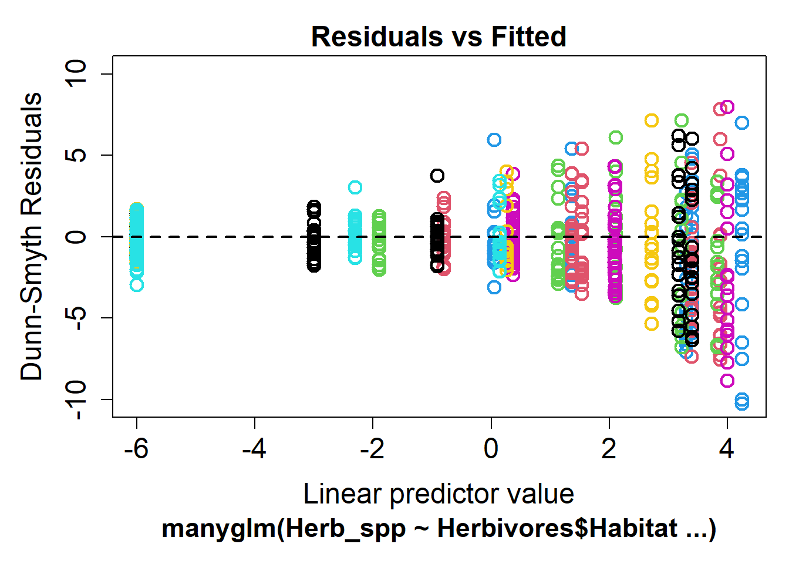
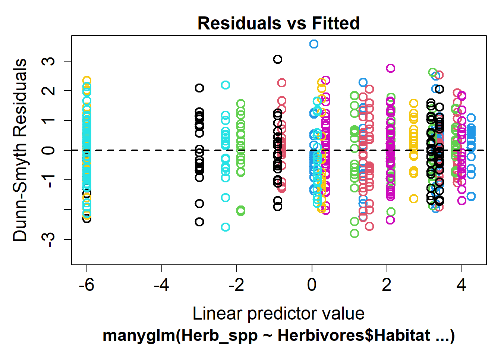

library(mvabund)Análisis multivariado con mvabund
Los datos multivariados son comunes en las ciencias ambientales, ocurren cuando medimos varias variables de respuesta en cada muestra replicada. Preguntas como cómo varía la composición de especies de una comunidad entre sitios, o cómo varía la forma de los árboles (medida por varias características morfológicas) con la altitud, son preguntas multivariadas.
Utilizaremos el paquete mvabund para especificar y ajustar modelos estadísticos multivariados a este tipo de datos.
¿En qué se diferencia este método de otros análisis multivariados? Muchos análisis comúnmente utilizados para conjuntos de datos multivariados (por ejemplo, PERMANOVA, ANOSIM, CCA, RDA, etc.) son “análisis basados en distancias”. Esto significa que el primer paso del análisis es calcular una medida de similitud entre cada par de muestras, convirtiendo así un conjunto de datos multivariado en univariado.
Existen algunos problemas con este tipo de análisis. En primer lugar, su poder estadístico es muy bajo, excepto para variables con alta varianza. Esto significa que para variables que son menos variables, es menos probable que los análisis detecten un efecto de tratamiento. En segundo lugar, no tienen en cuenta una propiedad muy importante de los datos multivariados, que es la relación media-varianza. Típicamente, en conjuntos de datos multivariados como conjuntos de datos de abundancia de especies, las cuentas de especies raras tendrán muchos ceros con poca varianza, y las cuentas más altas para especies más abundantes serán más variables.
El enfoque de mvabund mejora el poder estadístico en una variedad de especies con diferentes varianzas e incluye una suposición de una relación media-varianza. Esto se logra ajustando un único modelo lineal generalizado (GLM) a cada variable de respuesta con un conjunto común de variables predictoras. Luego podemos usar remuestreo para probar las respuestas significativas a nivel de comunidad o a nivel de especie ante nuestros predictores.
Además, el marco basado en modelos facilita verificar nuestras suposiciones e interpretar la incertidumbre en torno a nuestros resultados.
Si estás interesado en este método, mira el video introductorio Introducing mvabund and why multivariate statistics in ecology is a bit like Rick Astley…

En este ejemplo, utilizamos un conjunto de datos en el que los investigadores querían contrastar la composición de especies de herbívoros marinos en cinco especies de macroalgas. Se recolectaron veinte individuos replicados de cada una de las siete especies de macroalgas de Sydney Harbour, y se registró la abundancia de siete especies de crustáceos herbívoros en cada réplica (datos de Poore et al. 2000). Los datos son multivariados porque se midieron siete variables de respuesta (las especies) en cada una de las muestras.

Podríamos reducir esto a un conjunto de datos univariado calculando las 4950 (100*99/2) diferencias en pares entre las muestras, y utilizar estas diferencias para visualizar patrones en los datos (por ejemplo, como hicimos en nuestro ejemplo de escalamiento multidimensional) o probar hipótesis sobre grupos de muestras mediante remuestreo de estas diferencias.
Aquí, utilizaremos mvabund para contrastar la composición de especies en diferentes hábitats utilizando modelos apropiados para las relaciones media-varianza y permitiéndonos verificar las suposiciones de esos modelos.
Ejecución del análisis
Primero, instala y carga el paquete mvabund.
Tus datos deben tener el formato en el que cada muestra es una fila y cada variable es una columna. Descarga el conjunto de datos de especialización de herbívoros y importa en R para ver el formato deseado.
Herbivores <- read.csv(file = "Herbivore_specialisation.csv", header = TRUE)Las dos primeras columnas son variables categóricas que etiquetan las muestras como provenientes de cada uno de los cinco hábitats o como recolectadas durante el día o la noche. La tercera columna es el número de réplica por combinación de hábitat y día/noche. La cuarta columna es la biomasa del hábitat muestreado y el resto de las columnas son los recuentos de cada especie de herbívoro en cada muestra.
Ahora utilizaremos solo los datos de abundancia (en las columnas 5 a 11) y los convertiremos al formato de objeto mvabund utilizado por el paquete mvabund.
Herb_spp <- mvabund(Herbivores[, 5:11])Podemos echar un vistazo rápido a la dispersión de nuestros datos utilizando la función boxplot.
par(mar = c(2, 10, 2, 2)) # adjusts the margins
boxplot(Herbivores[, 5:11], horizontal = TRUE, las = 2, main = "Abundance")Parece que algunas especies de herbívoros marinos (por ejemplo, Ampithoe ngana) son mucho más abundantes y variables que otras (por ejemplo, Cymadusa munnu). ¡Probablemente sea una buena idea verificar nuestra relación media-varianza! Podemos hacer esto utilizando la función meanvar.plot:
meanvar.plot(Herb_spp)Claramente se puede observar que las especies con altas medias (en el eje x) también tienen altas varianzas (eje y).
Podemos abordar esta relación eligiendo una familia de GLM con una suposición adecuada de media-varianza. La familia predeterminada utilizada por mvabund al ajustar GLMs multivariados es la binomial negativa, que asume una relación cuadrática entre la media y la varianza, y una relación log-lineal entre las variables de respuesta y las variables continuas. En este ejemplo, solo tenemos variables categóricas, por lo que eso no es demasiado importante. Si no estás seguro de estas relaciones, no te preocupes, podemos verificar el ajuste de nuestro modelo más adelante.
Ahora volvamos a nuestras preguntas de investigación. ¿Hay diferencias en la composición de especies de los siete herbívoros marinos muestreados? ¿Algunas de ellas se especializan en tipos particulares de algas mientras que otras son alimentadoras más generalizadas? ¿Cuáles son las especies? Comencemos por observar los datos visualmente.
Existe una función de trazado incorporada y rápida en el paquete mvabund que nos permite contrastar las abundancias transformadas con las variables predictoras que elijamos. Para contrastar las abundancias con el hábitat, utilizaríamos:
plot(Herb_spp ~ as.factor(Herbivores$Habitat), cex.axis = 0.8, cex = 0.8)
PIPING TO 2nd MVFACTOR Alternativamente, podemos incluir el argumento transformation="no" para ver los datos de abundancia en bruto. Como este gráfico se basa en el lenguaje de trazado base de R, puedes agregar argumentos adicionales para personalizar el gráfico. Hemos reducido el tamaño del texto de los ejes (cex.axis=0.8) y de los símbolos (cex=0.8) para poder ver mejor lo que está sucediendo.
Es un gráfico bastante desordenado, pero hay un par de cosas que llaman nuestra atención. Parece que el herbívoro Ampithoe ngana es muy abundante y comerá prácticamente cualquier cosa. Por otro lado, Cymadusa munnu y Plumithoe quadrimana son bastante raras. Ampithoe ngana, A. caddi, A. kava y Exampithoe kutti son alimentadores generalistas, mientras que Perampithoe parmerong está en gran medida especializada en las dos especies de Sargassum.
Ahora contrastemos la composición de especies entre las especies de algas para ver si los modelos respaldan nuestras observaciones.
La sintaxis del modelo a continuación ajusta nuestra variable de respuesta (el objeto mvabund Herb_spp con los 100 recuentos de las 7 especies) a la variable predictora Habitat (tipo de alga).
mod1 <- manyglm(Herb_spp ~ Herbivores$Habitat, family = "poisson")Supuestos a verificar
Antes de examinar los resultados, debemos verificar los supuestos de nuestro modelo. Podemos utilizar la función plot para generar un gráfico de los residuos.
plot(mod1)
Si el modelo se ajusta bien, deberíamos ver una dispersión aleatoria de puntos. Lo que no queremos ver es una relación, ya sea lineal o curvilínea, o una forma de abanico. Esto podría significar que uno de nuestros supuestos estaba equivocado: ya sea que hayamos especificado incorrectamente la relación entre la media y la varianza, o que nuestra relación asumida entre nuestra respuesta y los predictores sea incorrecta. O también podríamos haber omitido una variable explicativa clave en nuestro modelo, lo cual deja mucha varianza sin explicar.
En este ejemplo, vemos una clara forma de abanico en el gráfico de residuos, lo que significa que hemos especificado incorrectamente nuestra relación entre la media y la varianza. Podemos utilizar el argumento family para elegir una distribución que se adapte mejor a nuestros datos. Para datos de recuento que no se ajustan a la distribución 'poisson', podemos usar la distribución negative_binomial.
mod2 <- manyglm(Herb_spp ~ Herbivores$Habitat, family = "negative_binomial")
plot(mod2)Warning in default.plot.manyglm(x, res.type = res.type, which = which, caption
= caption, : Only the first 7 colors will be used for plotting.
Este gráfico de residuos es mucho mejor, ahora no hay una forma de abanico discernible y utilizaremos este modelo para todo el análisis posterior.
Interpretación de los resultados
Podemos probar la hipótesis multivariante de si la composición de especies varía entre los hábitats utilizando la función anova. Esto nos da una tabla de análisis de desviación donde utilizamos pruebas de razón de verosimilitud y valores p remuestreados para buscar un efecto significativo del hábitat en los datos de la comunidad.
anova(mod2)Time elapsed: 0 hr 0 min 14 secAnalysis of Deviance Table
Model: Herb_spp ~ Herbivores$Habitat
Multivariate test:
Res.Df Df.diff Dev Pr(>Dev)
(Intercept) 99
Herbivores$Habitat 95 4 625.2 0.001 ***
---
Signif. codes: 0 '***' 0.001 '**' 0.01 '*' 0.05 '.' 0.1 ' ' 1
Arguments:
Test statistics calculated assuming uncorrelated response (for faster computation)
P-value calculated using 999 iterations via PIT-trap resampling.Podemos ver en esta tabla que hay un efecto significativo del hábitat (LRT = 625, P = 0.001), lo que significa que la composición de especies de herbívoros difiere claramente entre las especies de algas en las que se encuentran.
Para examinar esto más a fondo y ver qué especies de herbívoros es más probable que se encuentren en qué especies de algas, podemos realizar pruebas univariadas para cada especie por separado.
Esto se hace utilizando el argumento p.uni="adjusted" en la función anova. La parte “adjusted” del argumento se refiere al método de remuestreo utilizado para calcular los valores p, teniendo en cuenta la correlación entre las variables de respuesta. Esta correlación se encuentra a menudo en los sistemas ecológicos donde diferentes especies interactuarán entre sí, compitiendo o facilitando el uso de recursos.
anova(mod2, p.uni = "adjusted")Time elapsed: 0 hr 0 min 15 secAnalysis of Deviance Table
Model: Herb_spp ~ Herbivores$Habitat
Multivariate test:
Res.Df Df.diff Dev Pr(>Dev)
(Intercept) 99
Herbivores$Habitat 95 4 625.2 0.001 ***
---
Signif. codes: 0 '***' 0.001 '**' 0.01 '*' 0.05 '.' 0.1 ' ' 1
Univariate Tests:
Peramphithoe_parmerong Ampithoe_caddi
Dev Pr(>Dev) Dev Pr(>Dev)
(Intercept)
Herbivores$Habitat 148.716 0.001 91.659 0.001
Ampithoe_kava Ampithoe_ngana
Dev Pr(>Dev) Dev Pr(>Dev)
(Intercept)
Herbivores$Habitat 85.366 0.001 90.221 0.001
Cymadusa_munnu Exampithoe_kutti
Dev Pr(>Dev) Dev Pr(>Dev)
(Intercept)
Herbivores$Habitat 21.452 0.001 107.254 0.001
Plumithoe_quadrimana
Dev Pr(>Dev)
(Intercept)
Herbivores$Habitat 80.575 0.001
Arguments:
Test statistics calculated assuming uncorrelated response (for faster computation)
P-value calculated using 999 iterations via PIT-trap resampling.Incluso después de ajustar por pruebas múltiples, hay un efecto del hábitat en todas las especies.
Hasta ahora, solo hemos considerado una variable predictora del hábitat. Al modificar la fórmula en mvabund, podemos probar modelos más complejos. Por ejemplo, para ajustar un modelo con tanto el hábitat como el día o la noche, utilizaríamos:
mod3 <- manyglm(Herb_spp ~ Herbivores$Habitat * Herbivores$DayNight, family = "negative_binomial")
anova(mod3)Time elapsed: 0 hr 0 min 46 secAnalysis of Deviance Table
Model: Herb_spp ~ Herbivores$Habitat * Herbivores$DayNight
Multivariate test:
Res.Df Df.diff Dev Pr(>Dev)
(Intercept) 99
Herbivores$Habitat 95 4 625.2 0.001 ***
Herbivores$DayNight 94 1 6.2 0.600
Herbivores$Habitat:Herbivores$DayNight 90 4 25.4 0.438
---
Signif. codes: 0 '***' 0.001 '**' 0.01 '*' 0.05 '.' 0.1 ' ' 1
Arguments:
Test statistics calculated assuming uncorrelated response (for faster computation)
P-value calculated using 999 iterations via PIT-trap resampling.Puedes observar que la composición de especies de herbívoros varía según el hábitat, pero no entre el día y la noche.
Comunicando los resultados
Escrito. Si estuviéramos escribiendo un artículo sobre las diferencias en el uso de hábitat por parte de los herbívoros marinos, podríamos escribir lo siguiente: Hubo comunidades de herbívoros marinos diferentes en diferentes sustratos de algas (LRT = 625, P < 0.001). Podemos ser más descriptivos sobre las diferencias en la comunidad utilizando una representación gráfica de nuestros resultados.
Visual. Los datos multivariados se visualizan mejor mediante gráficos de ordenación. Consulta el paquete boral para obtener una ordenación basada en modelos. Para comenzar, mira este video.
Más ayuda
Este método fue creado por el grupo de investigación Ecostats de la UNSW. Puedes estar al tanto de sus últimas investigaciones en su blog. Han estado actualizando el paquete mvabund con muchas características nuevas emocionantes, incluyendo remuestreo por bloques y análisis de la cuarta esquina.
Wang, Y, U Naumann, ST Wright & DI Warton (2012) mvabund - un paquete R para el análisis basado en modelos de datos de abundancia multivariados. Methods in Ecology and Evolution 3: 471-474.
Autores: Rachel V. Blakey y Andrew Letten
Año: 2016
Última actualización: Nov. 2023